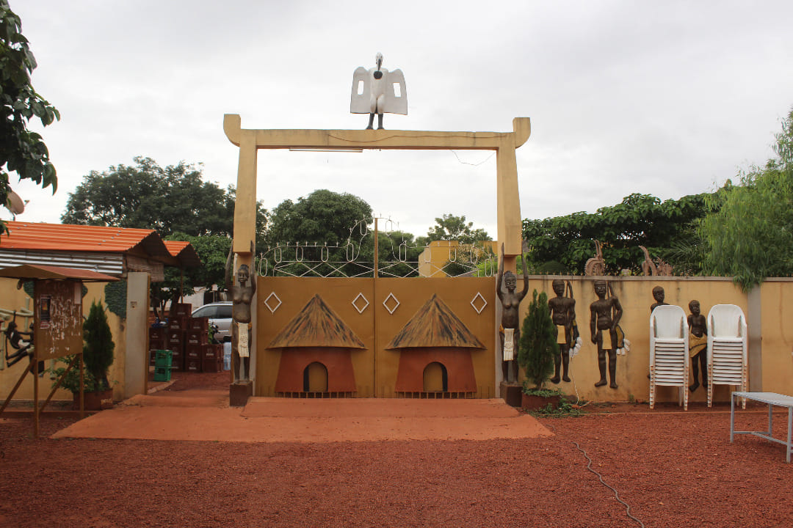
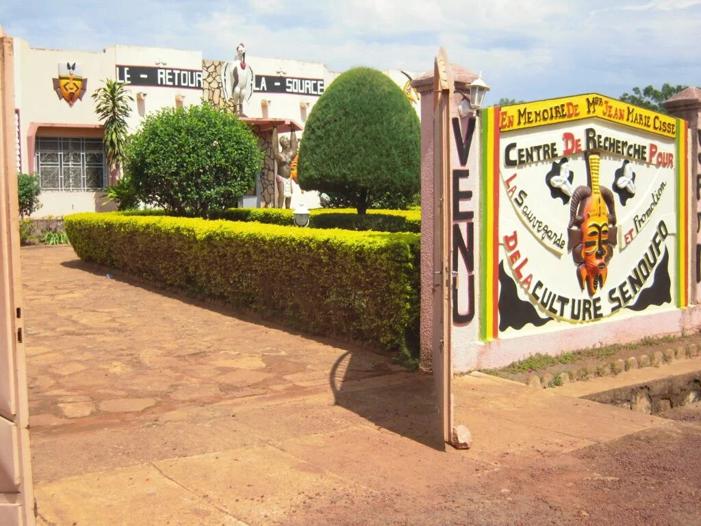
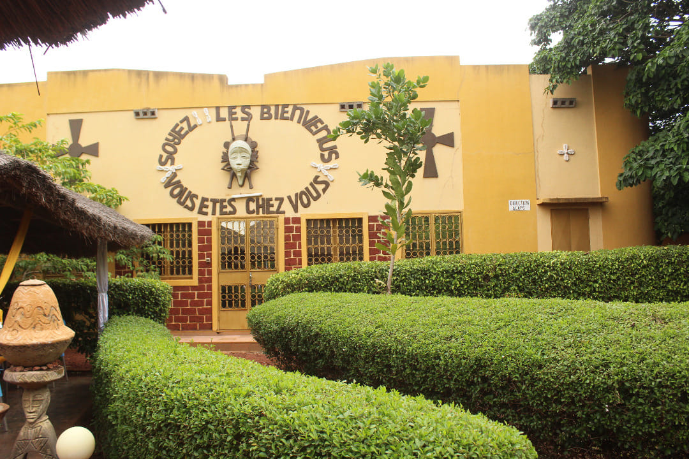
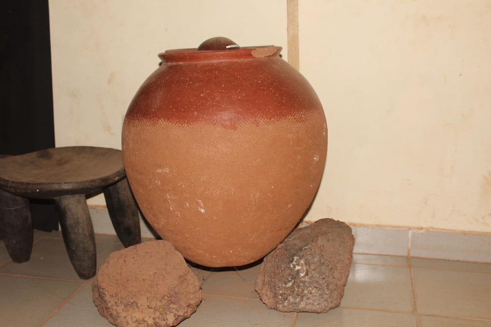

Heritage
Histoire du Musée Senoufo
Origines et Contexte Historique
Le prêtre espagnol René Fournier commence son travail avec les Sénoufo, posant les bases de la future collection.
Fondation du Musée
Le musée est officiellement inauguré, devenant un centre de référence pour la culture sénoufo.
Développement
Amélioration des installations et des expositions pour une meilleure expérience des visiteurs.
Aujourd'hui
Le musée continue de jouer un rôle essentiel dans la préservation et la promotion de la culture sénoufo.
Découverte
Galerie du Musée Senoufo




×